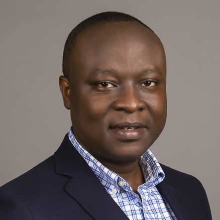
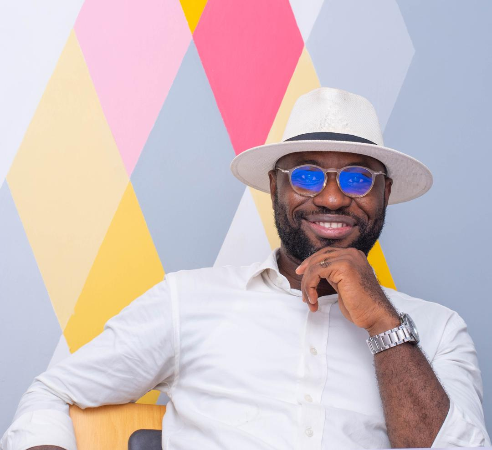
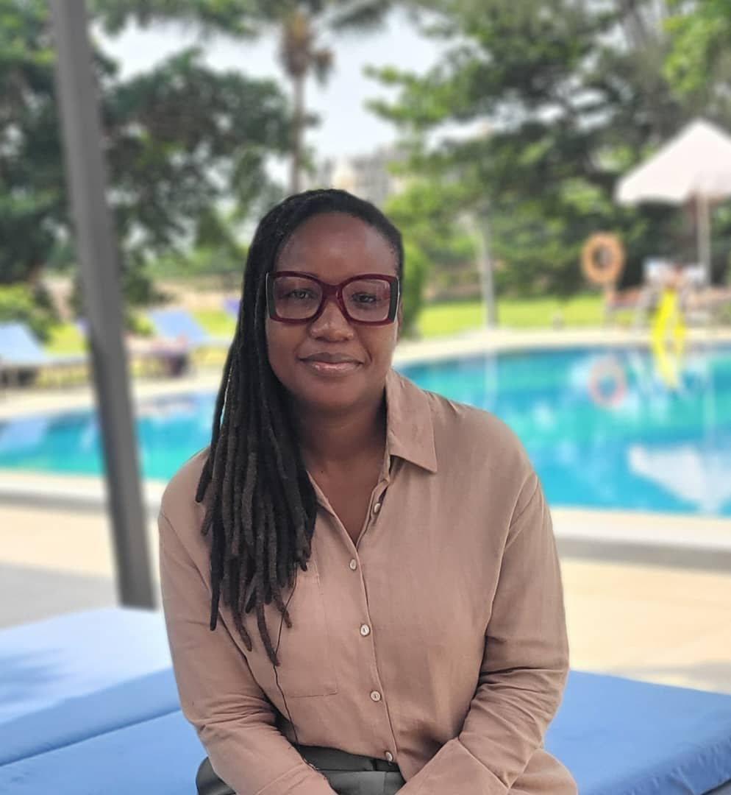
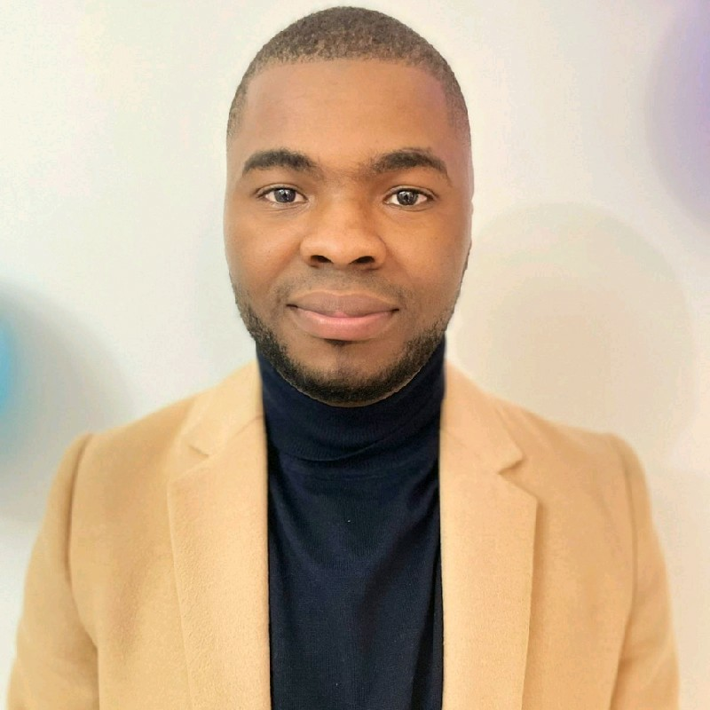
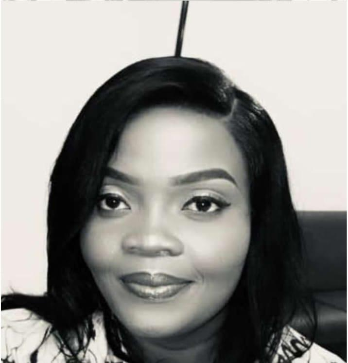
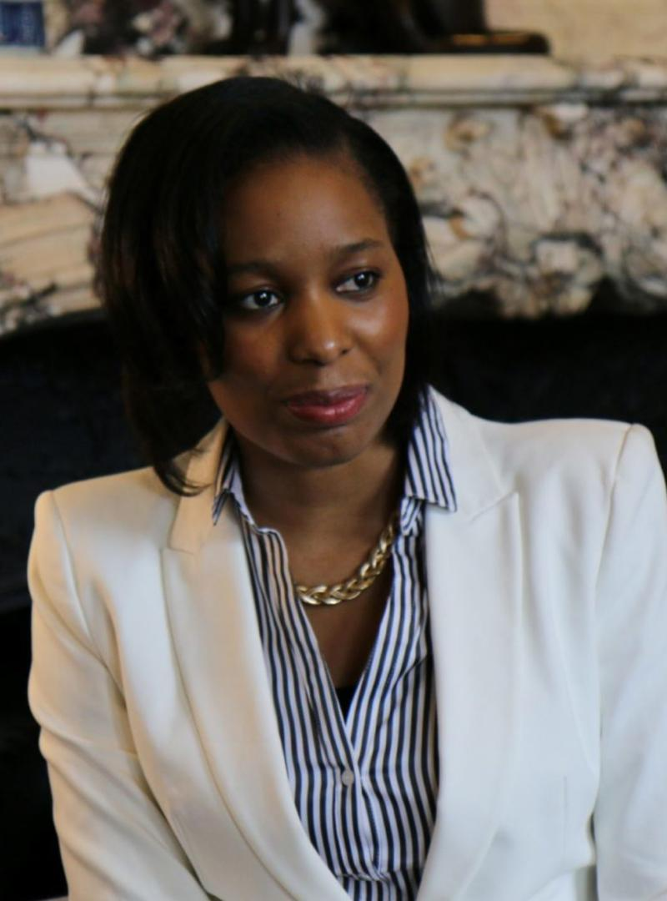
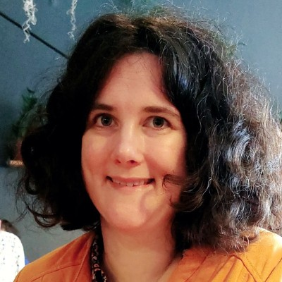

Our Purpose
The Rotary Fellowship of Sub-Saharan Cuisine (RFSSC) is a community of Rotarians and friends who celebrate and promote the diverse culinary traditions of Sub-Saharan Africa. We aim to foster intercultural understanding, support health and sustainable development through food, and strengthen connections among members of the Rotary family and beyond.
Organization & Governance
The Fellowship is guided by a steering committee composed of Rotarians from diverse professional and cultural backgrounds. The committee oversees activities, membership coordination, and ensures alignment with Rotary values. Leadership roles are voluntary and reflect the spirit of service and inclusiveness at the heart of the Fellowship.
Governance Documents
Our Team

Paterne GAYE GUINGNIDO
Chair (President)

Vignilé Sinodobe AGLI
Vice Chair (Vice President)

Ida KINTOSSOU
Secretary

Crépin FADJO
Treasurer

Christelle AGO FAIHUN
Public Relations Officer

Jeanne VITO
Outreach & Membership Officer

Hélène LAVILLE
Developement Officer